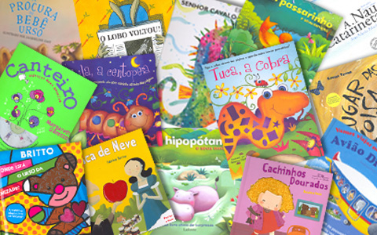

Todos sabemos que o hábito da leitura é um grande estímulo à criatividade, imaginação, inteligência, e à capacidade verbal e de concentração das crianças. Sabemos também que os livros deveriam estar presentes no dia-a-dia das crianças, do mesmo modo que seus brinquedos. Os livros nos enriquece a todos e nos leva a mergulhar em aventuras, histórias, e em riquíssimas informações.
O livro é uma grande janela para a formação em todos os sentidos. Poderíamos estar falando e falando acerca dos benefícios do livro para as crianças, mas não pararíamos jamais. O importante é ter claro que os livros são importantes, mas o ato de ler, se possível todos os dias, é o que levará seu filho a este cantinho tão gostoso que é a aventura do saber, do conhecer, e do descobrir. Além disso, se os pais compartilham o momento da leitura de um livro com os filhos, estarão estabelecendo um laço especial entre ambas as partes.
Um leitor não nasce, se faz!!!
O interesse pela leitura deve-se inculcar desde o berço, e tratar com persistência e dedicação, que se converta num hábito. É fundamental para as crianças que aprendam a buscar conhecimentos mediante a leitura desde a mais tenra idade. As crianças devem ouvir estórias o quanto antes possível. Recomenda-se, entretanto, que o façam com disciplina, ou seja, tendo preconcebida uma hora ao dia para fazê-lo. Poderia ser na hora de dormir, ou depois de comer, e longe de qualquer distração.
Não é necessário esperar que uma criança leia para que ela possa ter contato com os livros. Existem livros para todas as idades. Livros só com ilustrações, para que os pais vão indicando o nome de cada figura e fazendo com que o bebê repita. Há livros com vocabulários, ou seja, que além da imagem, leva também o nome embaixo da mesma, para que o bebê vá visualizando as letras e as palavras. E os livros com texto e ilustrações para as crianças que já sabem ler.
Os pais de crianças que ainda não sabem ler, devem ler uma ou mais vezes, conforme seus filhos lhes peçam. Não devem limitar seus gostos. Que leiam o que lhes interessam, seja o que seja.
Os pais devem valorizar o momento da leitura dos filhos. Valorizar e diversificar os temas falando deles com as crianças, favorecendo todo tipo de livro, seja do material que for (papel, cartão, plástico, etc.), e valorizar o tempo que as crianças dedicam à leitura. Os benefícios da leitura para as crianças
Os benefícios do livro para as crianças são incalculáveis e para toda a vida. Leva a criança a querer ler, a buscar saber, a adentrar-se no mundo da arte, do desenho e da imagem através das ilustrações. Aumenta sua habilidade de escutar, desenvolve seu sentido crítico, aumenta a variedade de experiências, e cria alternativas de diversão e prazer para ela.
De passagem, a criança aprende a converter facilmente as palavras em idéias, imagina o que não viu e faz com que consiga mergulhar na situação emocional do personagem, provando sensações como o perigo, o mistério... A criança se diverte ou chora através dos livros. Além disso, a criança aprende valores comuns. O de ser uma criança boa e amiga, por exemplo, como Peter Pan. A criança desenvolve consciências conhecendo a si mesma, formando critérios, sem contar que a ajuda a escrever e a relacionar-se melhor socialmente.
Hoje em dia parece ser que o interesse pela leitura tem experimentado um crescimento por parte das crianças. E a oferta tem acompanhado essa demanda. As editoras de livros infantis não só aumentaram a quantidade de produtos como também melhoraram sua qualidade. Se damos um passeio pelas livrarias e bibliotecas infantis, podemos encontrar uma infinidade de livros repletos com as mais curiosas ilustrações, cheios dos temas mais interessantes... Cada dia são mais irresistíveis!
Além dessa oferta de livros, nota-se também que foram criados espaços de leitura exclusivamente para as crianças nas escolas, bibliotecas, livrarias, etc.
Os livros já ocupam espaço em muitos quartos de crianças, desde sua idade mais pequena. Isso demonstra que os pais estão cada dia mais conscientes do valor da leitura. E serão eternamente agradecidos por isso.
Tags:leitura
livros para crianças
contos de fadas
contos infantis
estórias para crianças
hábito da leitura
leitura infantil
aprender a ler
dia mundial do livro
No dia 2 de abril se celebra o Dia Internacional do Livro Infantil e Juvenil, com o objetivo de comemorar outro célebre aniversariante. Às inumeráveis festividades que se celebram neste ano se soma ao aniversário do nascimento de Hans Christian Andersen, o pai dos contos. Quando a criança não gosta de ler
Quando a criança está aprendendo a ler, tem que levar em conta que ela estará motivada: o aprendiz de leitor pratica lendo os textos das sacolas do supermercado ou dos cartazes que vê pelas ruas. Mas, também se deve levar em conta que ela está fazendo um grande esforço.
Aprender a ler faz parte dos primeiros aprendizados que as crianças realizam na escola, e ainda que não seja uma tarefa fácil no início, existem duas formas de ajudá-las para que consigam isso com êxito: incentivar a prática da leitura e animá-las a ler em voz alta.
Por que não se deve deixar o bebê chorar
Por que não se deve deixar o bebê chorar
Trabalho Infantil no Brasil
Trabalho Infantil no Brasil
Tabela chinesa para predizer sexo do bebê
Tabela chinesa para predizer sexo do bebê
Alimentação para bebês de 4 a 6 meses